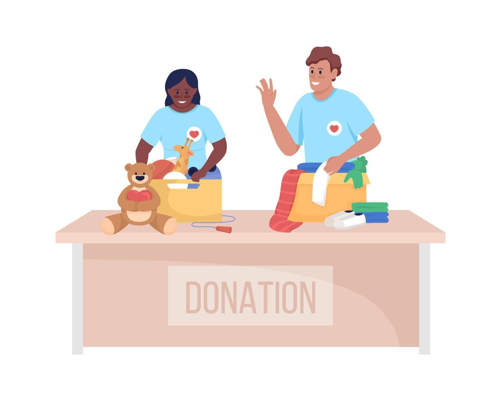

“Twenty years from now you will be more disappointed by the things that you didn't do than by the ones you did do. So throw off the bowlines. Sail away from the safe harbor. Catch the trade winds in your sails. Explore. Dream. Discover.”
H. Jackson Brown Jr., P.S. I Love You ―
How will you begin to dream something no machine can dream?
One thing a machine can not do is feel. They do not have emotions which I believe is core to dreaming about something machines can't dream. Machines get data from datasets (a wide database). They often recycle thoughts are mix and match but can't do more than that. I will dream by feeling. I will let love, uncertainty and fear shape my imaginations in a way the machine can't. My dreams will be born from lived experiences and not logic.
If memory is built from shared stories, which dreams do you want written into the past? What remains of you when all your stories are rewritten?
I believe that memories may fade or change but values and emotional impact remains. I want my dreams of the fun times, connections and kindness to be remebered in their raw forms and not as perfect stories but as moments that made others feel seen. What remains is the hope that I made something worth remembering.

If you seek to realize your hopes through AI, how will you ensure that it remains faithful to your will?
I will only use AI as a help tool. I will use it as a collaborator not a replacement. I say this as using AI to help me with maybe a code I don't know but all ideas come from me and how I experience the world.